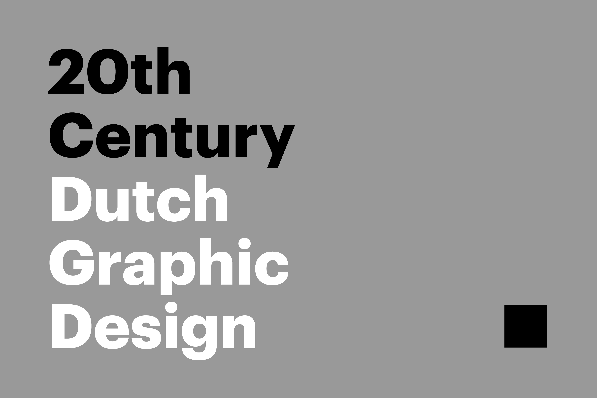
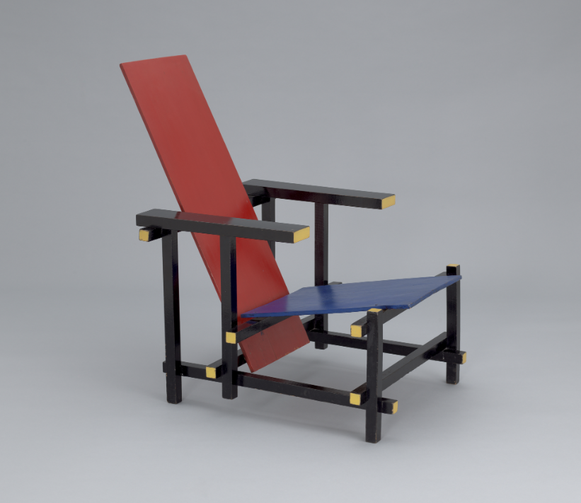
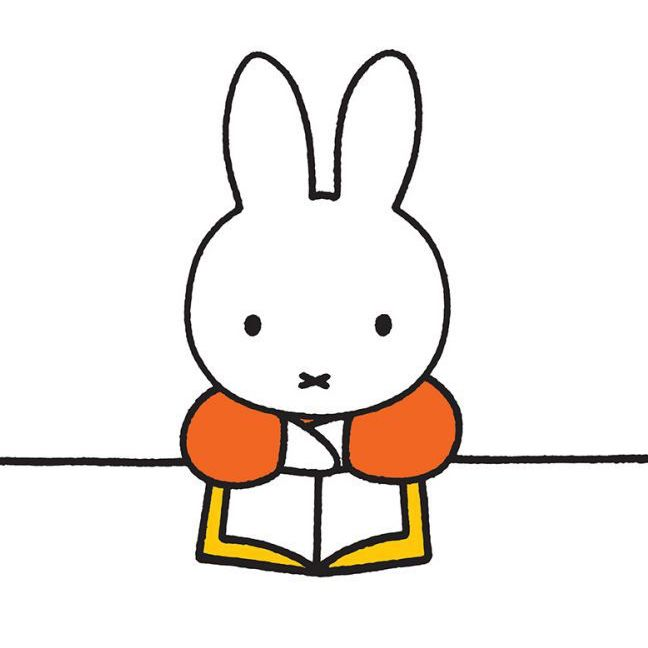
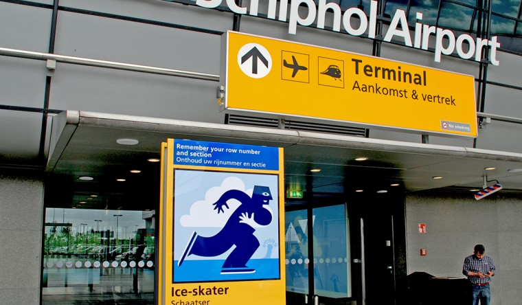
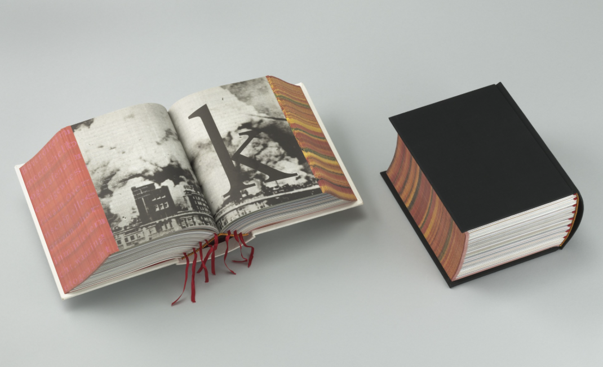

START
We’re searching for a summation of the 20th century in respect to Dutch graphic design. Lets add the parameters of either made by Dutch designers or its made for the Dutch population. As I continued my research its easy to see that the designs of the
20th century mimic the ideas and beliefs of the common Dutch citizen. Ideas of democracy, modesty, sobriety and tolerance. It is a clear representation of their national identity, heritage and ethnicity. What we learn to call 20th century Dutch graphic
design can be seen as a manifestation and reflection of these beliefs.
TWO SCHOOLS
As the 20th century commenced, much of the art in Europe was based on futurism and expressionism. In reaction to these influences, two movements emerged in the Netherlands. First to form was the Amsterdam School. Popular from 1910-1930, the movement reflected
much of Europe at the time. Combined with socialist style concepts, the Amsterdam School wanted to influence the designs of schools, small town main streets, and urban working-class apartment buildings. Think lots and lots of red/orange brick. In
a reaction to the Amsterdam School, various artists such as Piet Monderian, Bart van der Leckand, Theo van Doesburg and Gerrit Rietveld created what would be known as the De Stijl. Reflecting the notions of democracy, modesty, and tolerance, the De
Stijl or Neoplasticism, would use simplified geometry, strong lines and specific colors combined with an abstract focus. Furthermore, Doesburg published a journal relating the designs to varied aspects of life. Also called the De Stijl, the magazine
helped spread the ideas and reactions to years of repeated red brick.

Important to note was the influence of World War I on design in the Netherlands. It was because of the decision to stay nurtural during the war that lead to the Dutch to look within its own boarders for influence. Without the usual stream of art from
of the rest of Europe, the Dutch were forced to look to one another for education and craft. One of the front runners of De Stijl was Gerrit Thomas Rietveld. Born in 1888, Rietveld was a prime candidate for the De Stijl. Famous not only for his ability
to design architecture but for his unique De Stijl style furniture. The Red and Blue Chair, created and designed at the beginning of the De Stijl movement in 1917, was a wooden chair made from beech wood. Unique because it was a three dimensional
piece, it was painted black and then painted with blue, yellow and red. The chair perfectly represented the culture of the Dutch and the notions of tolerance, respect and modesty.
The Bauhaus was created in 1919 and flourished in pre-war Europe until 1933. It's hard to narrow down the Bauhaus’ influence because it's so far reaching. Originating in Germany, it naturally influenced its neighbor, the Netherlands. One strong designer
to emerge was Piet Zwart. Born in 1885 in the Netherlands, Zwart was a photographer, type designer, and graphic designer. He had been influenced by De Stijl but wanted to design something more functional. In the 1920’s he experimented with typography.
Without a formal training, he created type that was unbiased and pure from the effects of the world. Later, in the 1930’s he taught at the Rotterdam Academy of the Arts. Starting in 1930 and finishing in 1938, Zwart created what was known as The Book
of PTT. This book was designed to teach dutch children how to use the postal system. As a way to keep the kids interested, Zwart used multiple fonts, bright colors, and thick lines. He also created colors and used paper cut outs mixed with chalk and
colored pencils. The book was a unique, first of its kind pre-war perspective of utilitarian design in the Netherlands.
POST-WAR EUROPE

During World War II design in the Netherlands took to a slow pace of development. Yet the results were quite interesting. One of the results was Dick Bruna. Bruna, born in 1927, was a Dutch author, designer, and illustrator. Bruna’s family had been involved
in publishing since 1868, when his great-grandfather founded A.W Bruna & Son Publishing, propelling Bruna into the design world. While an adolescent, Bruna traveled to Paris for an internship and instantly fell in love with the works of Matisse and
Picasso. Perhaps best know for this creation of Miffy (Nijntje), a small rabbit colored with primary colors and soaked in heavy graphic lines. His use of primary colors and attention to strong lines is a direct homage to Gerrit Rievalta, the De Stijl,
and Matisse. Miffy first appeared in 1955 and has since appeared in over one hundred books, selling almost one hundred million copies world wide. At one point becoming one of Holland’s biggest exports. In 2004, New York City chose Miffy to be the
Official Family Tourist Ambassador. What’s clear is that the Miffy character is one hundred precent modernist and one hundred precent Dutch. Simple shapes and thick lines strengthen the notion that Dutch design reflects the culture of modesty and
simplicity.
Born around the same time, and a direct product of World War II, its hard to ignore the influence of Wim Crouwel. Born in 1927, Crouwel is a Dutch graphic designer and type designer. His type skills were honed at the Gerrit Rietveld Academie, another
inward connection to the De Stijl. Crouwel taught until 1985 and was even part of the Delft University of Technology. From 1985 till 1993 he was responsible for many of the designs at the Stedelijk Museum in Amsterdam. In 1967 he designed the typeface
New Alphabet which was designed around the use of cathode ray tube technology. In addition to the typefaces, Crouwel was obsessed with using a grid for a layout while designing. His obsession with the grid is another direct homage to the culture of
the Netherlands and Dutch culture of modesty and simplicity.
Wim Crouwel asked Irma Boom, a rising graphic design star in the 1980’s: Do you always mix that many sans serif typefaces? she replied yes because she thought it was an advantage. ‘That is not possible, we use Helvetica here” he replied.
MODERN DUTCH

As the rest of the 20th century played out, many more Dutch designers emerged. Two of them were Paul Mijksenaar and Irma Boom. Mijksenaar was born in 1944 and is probably best known as a visual designer and way finding expert. In 1965 he attended and
graduated from the Rietveld Academie much like his predecessors. Keeping in tradition of looking inward as a style of Dutch culture, he worked with Crouwel and Total design before starting his own studio where he is currently the Director of the International
Design Bureau Mijksenaar. His way finding clients include numerous international airports, train stations and bus terminals. Specifically, his way finding at Amsterdam Schiphol International Airport is of particular beauty and utility. His ability
to capture the Dutch culture and portray it in a way that is of public use is astounding.

Our other, later 20th century designer, is Irma Boom. Born in 1960 she is a relatively young Dutch designer compared to many of her counterparts. Very few graphic designers have achieved her level of success, Dutch or not. Note only has she designed hundreds
of books, it would be pointless to name all of her awards, accolades and achievements. While studying painting, she switched to graphic design and fell in love with the International and Swiss typography styles. Even Wim Crouwel at Total Design rejected
her internship application due her experimental type nature. While working at the Dutch Government Publishing and Printing Office she was discovered by graphic designer Ootje Oxenaar. Ootje was already established and had designed numerous Dutch bank
notes. He found her style experimental and asked her to design the coveted Dutch postage Stamp Book in 1987. Though poorly received and regarded as entirely experiment, she had established her self through failure as a prominent name in Dutch design.
“I realized negative publicity has an enormous impact,” she said, “more than positive publicity”. She saw the position at the Publishing and Printing office as a space to perfect her craft and elevate her style for the public. Boom became famous with
her five year long book project: SHV Think Book. Started in 1991 and finished in 1996 this book is offset printed, over two-thousand pages and currently on display at The Museum of Modern Art. She is constantly reinventing the book and pushing the
boundaries of what we think as book design. Also in 1991, Boom founded her Amsterdam office and started associating herself with Yale University as well as serving on the supervisory board of Gerrit Reitveld Academie. She builds and designs her books
like an architect. She focuses on permanence, beauty and enhancement. She wants to intrigue and lure the reader using type to trick and fool. She constantly experiments building books with food such as beef bouillon and coffee. She makes books that
are too thick and too small. Much like many of her designer counterparts around the world, becoming famous took experimenting and failure. As well, much like the other Dutch designers before her, she embedded, even through experimenting, the notions
of Dutch design and Dutch culture.
ALMOST THE END
It’s clear Dutch graphic design is two things, Its inward facing - and its complex. For every designer mentioned here in this essay there are 7 more not mentioned. I started with Gerrit Rietvald and the De Stijl because it ends with them too. An infographic
of the the design world in the Netherlands would circle and spiral inward. The ideas of democracy, modesty, sobriety, and tolerance are repeated from Rietvald to Zwart to Boom because they are so commonly shared among the Dutch. Unfiltered and seemingly
unaware of its surroundings, Dutch graphic design pushes the boundaries of history and craft. Artists like Rietvald and Bruna used thick black lines to show simplicity and modesty, traits inherited years before from Protestant childhoods. Irma Boom
used theoretically blank pages, thousands of them, to reinforce the notions of patience and proper experimentation. Dutch graphic design is much like a bubble. Perhaps we should pop it.